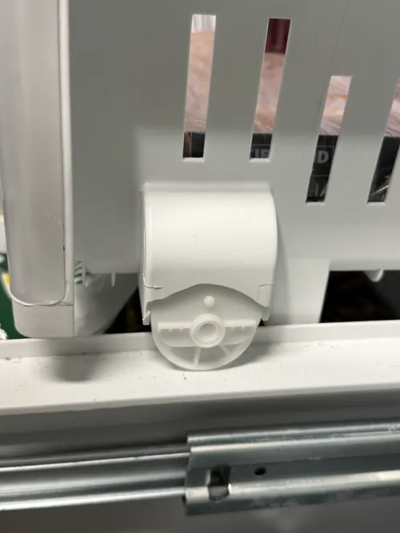

LG Refrigerator Repair: Signs Your Control Board May Be Failing
Modern LG refrigerators rely heavily on electronic control systems to manage cooling performance, temperature regulation, fan operation, defrost cycles, ice production, and communication between various appliance components. At the center of these systems is the control board, often referred to as the refrigerator’s electronic brain. When a control board begins to fail, it can create a wide range of symptoms that may appear unrelated at first. Understanding these warning signs can help homeowners recognize potential problems early and seek professional LG refrigerator repair before additional damage occurs.
Unlike traditional refrigerators that relied primarily on mechanical controls, modern appliances use sophisticated electronic boards to coordinate nearly every aspect of refrigerator operation. The control board continuously receives information from sensors, monitors cooling conditions, and sends commands to compressors, fans, defrost systems, and other critical components. Because so many systems depend on proper communication, even minor control board problems can affect overall refrigerator performance.
One of the most common signs of a failing control board is inconsistent cooling. Homeowners may notice that refrigerator temperatures fluctuate unexpectedly, food spoils faster than normal, or certain areas inside the refrigerator become warmer than others. In some cases, the freezer may continue operating normally while the fresh food compartment struggles to maintain proper temperatures. These symptoms often occur because the control board is no longer managing cooling cycles correctly.

Intermittent refrigerator operation is another common warning sign. The appliance may appear to function normally one day and develop cooling problems the next. Some homeowners report that the refrigerator randomly starts and stops, while others notice that certain functions work inconsistently. Because control board failures can be intermittent during the early stages, diagnosis may require specialized testing procedures.
Unusual behavior from fan motors can also indicate electronic control problems. Modern refrigerators use multiple fans to circulate cold air and remove heat from the cooling system. A failing control board may cause fans to operate at incorrect speeds, stop unexpectedly, or run continuously without proper cycling. These airflow issues can lead to uneven temperatures, frost buildup, and reduced cooling efficiency throughout the appliance.
Many homeowners first become aware of control board issues when error codes appear on the refrigerator display. Modern LG refrigerators continuously monitor system performance and generate alerts when irregularities are detected. While error codes do not always confirm a failed control board, repeated electronic warnings, communication errors, or unexplained system alerts often justify professional LG refrigerator repair diagnostics.
Ice maker problems may also be linked to control board failures. Ice production depends on proper communication between sensors, water valves, cooling systems, and electronic controls. When the control board fails to coordinate these components correctly, homeowners may experience slow ice production, complete ice maker shutdown, inconsistent operation, or unexplained ice maker errors.
Defrost system problems are another potential indicator. Automatic defrost cycles help prevent excessive frost buildup on cooling components. If the control board cannot manage defrost functions properly, frost may accumulate around evaporator coils and restrict airflow. Over time, this can lead to cooling problems, increased energy consumption, and additional strain on refrigerator components.
Display panel issues should not be ignored either. Flickering displays, unresponsive buttons, incorrect temperature readings, or random changes in settings may indicate communication problems within the refrigerator’s electronic systems. Although display issues do not always mean the control board has failed, they often serve as an early warning sign of developing electronic problems.
Power related symptoms can also point toward control board concerns. Some refrigerators may reset unexpectedly, lose saved settings, or behave erratically after power interruptions. While electrical fluctuations can occasionally affect normal operation, recurring electronic instability may indicate a deeper control system problem that requires professional evaluation.
One of the biggest challenges with control board failures is that the symptoms often resemble other refrigerator problems. Cooling issues, fan malfunctions, ice maker failures, and error codes can all be caused by different components. Replacing parts based solely on symptoms may lead to unnecessary expenses while leaving the underlying problem unresolved. Accurate LG refrigerator repair diagnostics help determine whether the control board is truly responsible or if another system is contributing to the failure.
Professional LG refrigerator repair technicians use specialized testing equipment and diagnostic procedures to evaluate electronic systems thoroughly. Rather than guessing which component may be at fault, technicians systematically inspect sensors, wiring, communication circuits, cooling components, and control boards to identify the root cause of the problem.
If your refrigerator is displaying unusual behavior, inconsistent cooling, recurring error codes, or unexplained electronic issues, a failing control board may be involved. Early diagnosis can help prevent additional appliance damage, reduce repair costs, and restore reliable refrigerator performance. Understanding the warning signs of control board failure allows homeowners to respond quickly and maintain the long term reliability of their refrigerator.